metadata_dict = {'filename': 'datasets/basics_example/basics_example',
'resolution_in_microns': (1, 0.36, 0.36), # you can typically get this from the .tif metadata
'subsampling_factors': (1, 1/3, 1/3)}Cartographic interpolation
Project volumetric image onto a surface and map it to 2d using UV map.
This module is the “heart” of blender_tissue_cartography - the rest is just add ons. We illustrate it with a basic example of tissue cartography workflow.
In this notebook, we go through a basic example of tissue cartography - extracting the mildly curved surface of an epithelium from a confocal \(z\)-stack. This example data is taken from Lye et al. 2024, available here.
We introduce the functions of our python module for cartographic interpolation one by one.
Important conventions
- Image axis 0 is always the channel. All other axes are not permuted
- Mesh coordinates are always saved in microns.
- The UV map (the map of our surface mesh to a cartographic plane) always maps into the unit square, \(u\in[0,1], \; v\in[0,1]\). All of our projections will be square images (with transparent regions for parts of the UV square not covered by the unwrapped mesh)
Example dataset
Load and subsample data for segmentation
Data description myosin + membrane ventral view of Drosophila embryo during germband extension, from Lye et al. 2024.
We begin by creating a directory for our project where we’ll save all related files (and normally, the jupyter notebook used to generate them!).
Let’s load the dataset. We then enter the relevant metadata - the filename, resolution in microns, and how much we want to subsample for segmentation purposes.
metadata_dict['subsampling_factors'](1, 0.3333333333333333, 0.3333333333333333)image = tcio.adjust_axis_order(tcio.imread(f"{metadata_dict['filename']}.tif"))
print("image shape:", image.shape) # image shape - spatial axes are in z-x-y orderimage shape: (2, 26, 454, 511)subsampled_image = tcio.subsample_image(image, metadata_dict['subsampling_factors'],
use_block_averaging_if_possible=False)
print("subsampled image shape:", subsampled_image.shape)subsampled image shape: (2, 26, 151, 170)Create 3d segmentation
Now create a 3d segmentation, in this case using ilatik. We use ilastik binary pixel classification. We could post-process the ilastik output here, for example using morphsnakes. We then load the segmentation back into the jupyter notebook.
Attention: when importing the .h5 into ilastik, make sure the dimension order is correct! In this case, CZYX (where C=channel), for both export and import. You can include this metadata in the .h5:
# We now save the subsampled image as a .h5 file for input into ilastik for segmentation
tcio.write_h5(f"{metadata_dict['filename']}_subsampled.h5", subsampled_image, axis_order='CZYX')# After creating an ilastik project, training the model, and exporting the probabilities, we load the segmentation
segmentation = tcio.read_h5(f"{metadata_dict['filename']}_subsampled-image_Probabilities.h5")
segmentation = segmentation[0] # Select the first channel of the segmentation - it's the probability a pixel
# is part of the sample
print("segmentation shape:", segmentation.shape)segmentation shape: (26, 151, 170)# look at the segmentation in a cross-section
plt.imshow(segmentation[:,:,50], vmin=0, vmax=1)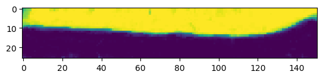
Meshing
We convert the segmentation into a triangular mesh using the marching cubes method and save the mesh. We save all meshes as wavefront .obj files (see wikipedia). In Python, we represent missing entries (such as a vertex that doesn’t have a normal by np.nan.
Important convention For sanity’s sake, we will always store all mesh coordinates in microns. This means rescaling appropriately after calculating the mesh from the 3d segmentation.
# Now we create a 3d mesh using the marching cubes method
vertices, faces = tcremesh.marching_cubes(segmentation, isovalue=0.5, sigma_smoothing=3)
# EXTREMELY IMPORTANT - we now rescale the vertex coordinates so that they are in microns.
vertices_in_microns = vertices * (np.array(metadata_dict['resolution_in_microns'])
/np.array(metadata_dict['subsampling_factors']))
mesh = tcmesh.ObjMesh(vertices_in_microns, faces)
mesh.name = "basics_example_mesh_marching_cubes"
mesh.write_obj(f"{metadata_dict['filename']}_mesh_marching_cubes.obj")Optional - mesh compression using igl
The mesh returned by the marching cubes method is normally much denser than necessary. You can automatically reduce its size here in Python, or later in Blender.
mesh_compressed = tcremesh.qslim(mesh, max_n_faces=int(faces.shape[0]/2))
mesh_compressed.name = "basics_example_mesh_marching_cubes_compressed"
mesh_compressed.write_obj(f"{metadata_dict['filename']}_mesh_marching_cubes_compressed.obj")Optional - improve mesh quality using MeshLab
We can remesh the output of the marching cubes algorithm to obtain an improved mesh, i.e. with more uniform triangle shapes. In this example, we first remesh to make the mesh more uniform. You can also try this out in the MeshLab GUI and export your workflow as a Python script. Be careful not to move the mesh or it will mess up the correspondence with the pixel coordinates!
mesh_remeshed = tcremesh_pymeshlab.remesh_pymeshlab(mesh)
mesh_remeshed.write_obj(f"{metadata_dict['filename']}_mesh_remeshed.obj")To check all went well, let’s overlay the mesh coordinates over a cross-section of the image. To do so, we first select the vertices whose positions correspond to the image slice, and then correctly rescale coordinates from microns to pixel coordinates.
get_cross_section_vertices_normals
get_cross_section_vertices_normals (slice_axis, slice_index, image, mesh, resolution, get_normals=True, width=3)
*Get mesh vertices and normals for diagnostic cross-section overlay plots.
Usage example:
`
slice_image, slice_vertices, slice_normals = get_cross_section_vertices_normals(1, 100,
image, mesh, metadata_dict["resolution_in_microns"])
plt.scatter(*slice_vertices.T, s=5, c="tab:red")
plt.quiver(*slice_vertices.T, *slice_normals.T, color="tab:red")
plt.imshow(slice_image[0], vmax=10000, origin="lower")
`Note: origin="lower" in plt.imshow() is essential for a correctly oriented plot in Python!!*
| Type | Default | Details | |
|---|---|---|---|
| slice_axis | int, 0,1,2 | Axis along which to slice image array | |
| slice_index | int | Index along the sliced axis | |
| image | 4d np.ndarray of shape (channels, n_x, n_y, n_z) | Image. Axis 0 is channel | |
| mesh | tcmesh.ObjMesh | Mesh | |
| resolution | int, default 256 | Resolution in pixels/micron. | |
| get_normals | bool | True | Whether to return normals also |
| width | int | 3 | Width of slice for vertex selection, in microns |
| Returns | np.array, np.array, np.array | slice_image : np.array Slice of image. Axis 0 is channel slice_vertices : np.array Projected vertices in the slice. The second axis is the coordinate one. slice_normals : 2d np.array (…, 2) Projected normals in slice. The second axis is the coordinate one. |
image = tcio.adjust_axis_order(tcio.imread(f"{metadata_dict['filename']}.tif"))
mesh = tcmesh.ObjMesh.read_obj(f"{metadata_dict['filename']}_mesh_remeshed.obj")slice_image, slice_vertices = get_cross_section_vertices_normals(2, 200,
image, mesh, metadata_dict["resolution_in_microns"], get_normals=False)fig = plt.figure(figsize=(10,10))
plt.scatter(*slice_vertices[:,::-1].T, s=5, c="tab:red")
plt.imshow(slice_image[0].T, origin="lower")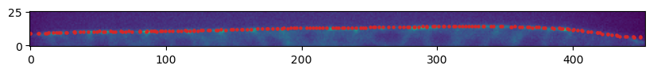
UV-mapping in blender
We now switch to blender and create a new empty project, which we will call f"{metadata_dict['filename']}.blend". We import the mesh just generated (File->Import).
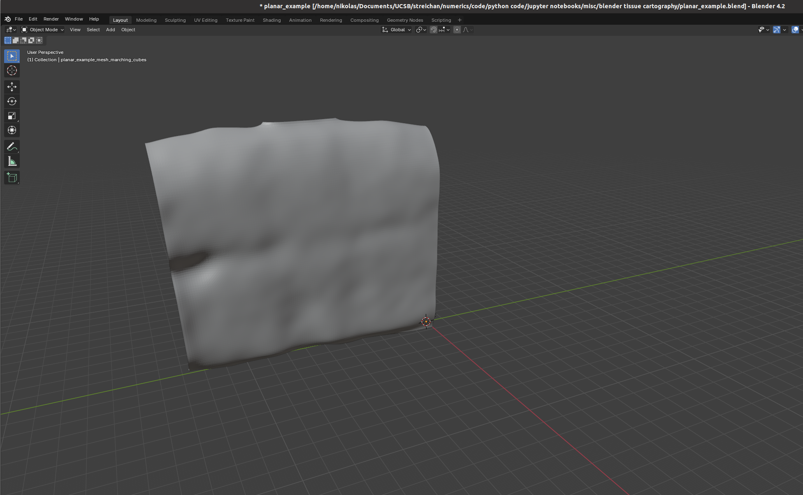
I recommend using the “object” tab (orange square on the right toolbar) to lock mesh position and rotation so we don’t accidentally move it.
Let’s try to move forward and get a UV map of the mesh. To do so, we go to the “UV Editing” tab on the top toolbar, and press “3” then “A” to select all faces (“1” selects vertices, “2” edges, and “3” faces). Click “UV->unwrap” on the top panel. 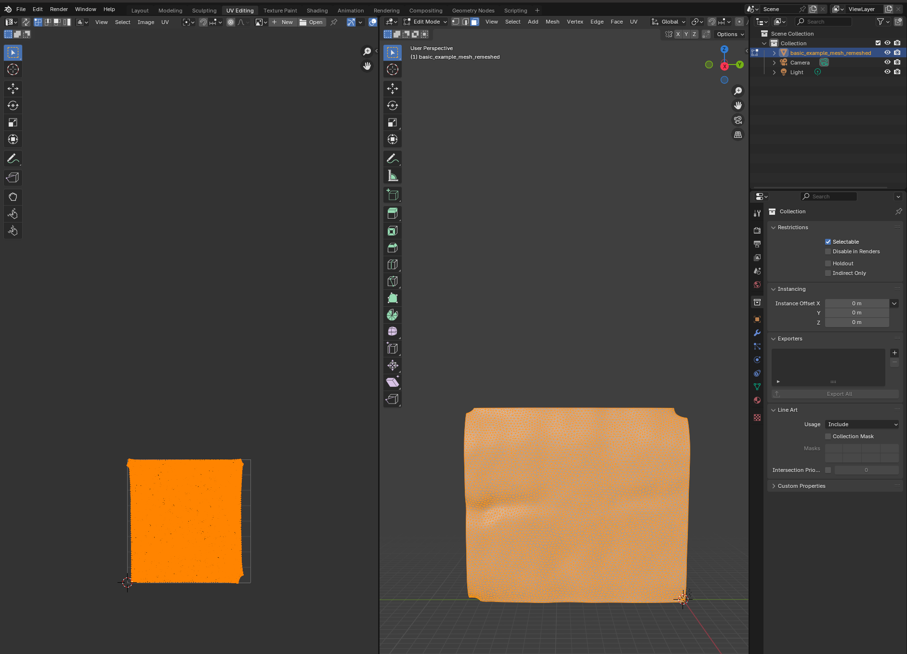 For more complicated meshes (e.g. a sphere), we will need to use extra steps, e.g. define seams.
Blender export
We then click on “File->Export” and save as .obj with UV and normals:
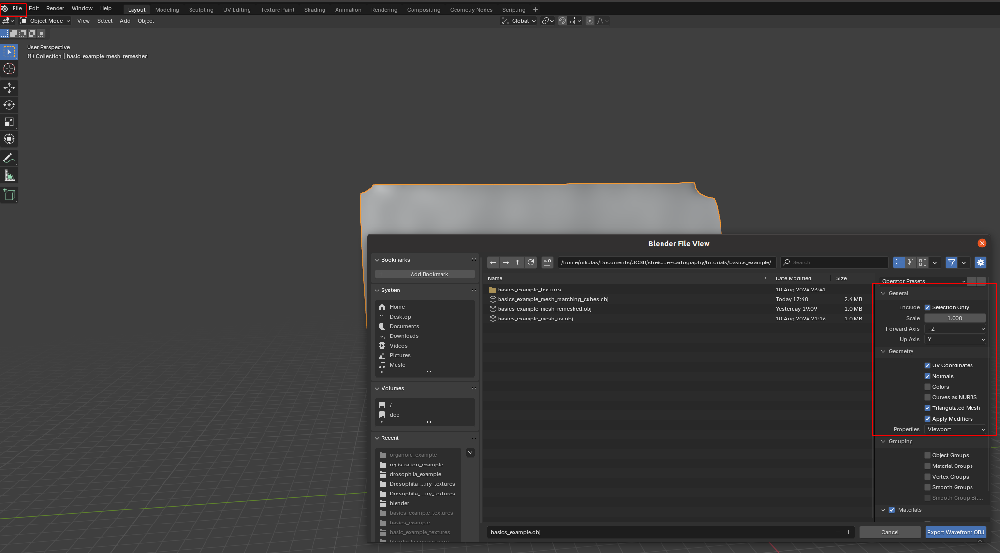
A few things are important: - Always include UV and normals. Otherwise, cartographic projection will fail! - Only export selected items! With a more complicated blender project, you might end up exporting multiple meshes. This will trip up the cartographic projection algorithm. - Export as triangulated mesh, since many of this package’s tools for more advanced examples work best/only with triangular meshes. This option will subdivide any quads/polygons your mesh may have.
The new mesh file f"{metadata_dict['filename']}_mesh_uv.obj" now contains vertex normals and UV coordinates as vn and vt lines. Note - there can be more vt’s than v’s.
Interpolation onto UV grid
We now read in the new .obj file to interpolate the image data onto the 3d mesh. We first introduce the functions necessary to do so, which are based on the scipy.interpolation module. Interpolation proceeds in two steps: 1. Interpolate the 3d coordinates from the mesh UV vertex positions onto the whole UV grid 2. Evaluate the image signal at the UV gridded 3d coordinates using a second interpolation step. This ensures that the resolution of the cartographic projection is not limited by the resolution of the mesh.
The UV grid always covers the unit square \([0,1]^2\).
We first show how the interpolation works in a step-by-step manner, and then give a function that packages the whole process.
# let's read in the mesh and match up the vertices, texture vertices, and normal vectors using the
# mesh connectivity information
mesh = tcmesh.ObjMesh.read_obj(f"{metadata_dict['filename']}_mesh_uv.obj")
# let's also load the image
image = tcio.adjust_axis_order(tcio.imread(f"{metadata_dict['filename']}.tif"))Warning: readOBJ() ignored non-comment line 4:
o basic_example_mesh_remeshed# let's make a scatter plot of the mesh texture coordinates, and color it by 3d coordinate values
fig = plt.figure(figsize=(4,4),)
plt.scatter(*mesh.texture_vertices.T, s=0.2, c=mesh.vertices[mesh.get_vertex_to_texture_vertex_indices(),2])
plt.axis("equal");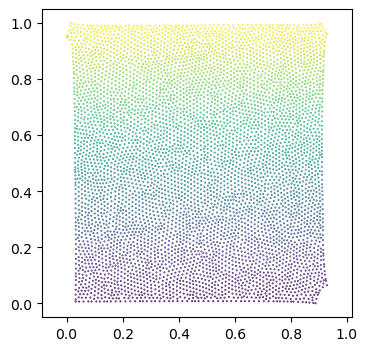
It’s not very noticeable in this example, but the part of the UV square covered by the unwrapped mesh can be extremely non-convex, in particular, if there are multiple patches (see notebook 3). Here is an example: 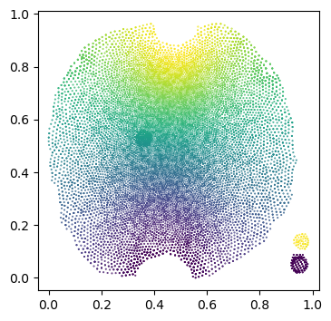
We set values outside the UV “islands” to np.nan, since they are undefined. For non-triangular meshes, this requires a little hack to generate UV layout mask which delineates the part of the UV square covered by the unwrapped mesh. For triangular meshes, our barycentric interpolation method can take care of this issue by construction.
get_uv_layout_mask_mask
get_uv_layout_mask_mask (mesh:blender_tissue_cartography.mesh.ObjMesh, uv_grid_steps=256)
*Get a layout mask of the UV square: 1 where the UV square is covered by the unwrapped mesh, 0 outside.
Based on matplotlib hack - this function works for non-triangular meshes.*
| Type | Default | Details | |
|---|---|---|---|
| mesh | ObjMesh | Mesh with texture_vertices | |
| uv_grid_steps | int | 256 | Size of UV grid. Determines resolution of result. |
| Returns | np.array of shape (uv_grid_steps, uv_grid_steps) | Mask of the part of the UV square covered by the unwrapped mesh |
uv_mask = get_uv_layout_mask_mask(mesh, uv_grid_steps=256)
fig = plt.figure(figsize=(4,4),)
plt.imshow(uv_mask, cmap='binary', alpha=0.5, extent=(0,1,0,1))
plt.scatter(*mesh.texture_vertices.T, s=0.2, c=mesh.vertices[mesh.get_vertex_to_texture_vertex_indices(),2])
plt.axis("equal");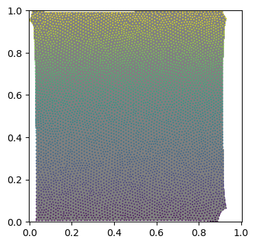
interpolate_barycentric
interpolate_barycentric (points, vertices, faces, values, distance_threshold=inf)
*Interpolate values defined on triangular mesh vertices onto points using barycentric interpolation.
Can handle triangular meshes in both 3d and 2d. Points not on the triangular mesh are projected onto the closest point. Points more distant than the distance_threshold will be set to np.nan. The data on the triangular mesh must be defined per vertex and can have any number of axes (scalars, vectors, tensors, …).
This function can also be used to transfer values defined on one mesh to another mesh’s vertices (if the two meshes are well-aligned in space).*
| Type | Default | Details | |
|---|---|---|---|
| points | np.array of shape (n_points, 2) or (n_points, 3) | Points at which to evaluate | |
| vertices | np.array of shape (n_vertices, 2) or (n_vertices, 3) | Mesh vertices | |
| faces | np.array of shape (n_faces, 3) | Mesh triangles, indices into vertices array | |
| values | np.array of shape (n_vertices, …) | Values at mesh vertices. Can have any number of additional axes. | |
| distance_threshold | float | inf | Points with a squared distance to mesh > distance_threshold are set to np.nan |
| Returns | np.array of shape (n_points, …) | Values at points. |
mesh = tcmesh.ObjMesh.read_obj(f"{metadata_dict['filename']}_mesh_uv.obj")
uv_grid_steps = 1024
u, v = 2*[np.linspace(0,1, uv_grid_steps),]
UV = np.stack(np.meshgrid(u, v), axis=-1).reshape((-1, 2))
interpolated = interpolate_barycentric(UV, mesh.texture_vertices, mesh.texture_tris,
mesh.vertices[mesh.get_vertex_to_texture_vertex_indices()],
distance_threshold=1e-5)
interpolated = interpolated.reshape((uv_grid_steps, uv_grid_steps, 3))[::-1]
# add flip check and warn!Warning: readOBJ() ignored non-comment line 4:
o basic_example_mesh_remeshed# plot the interpolated positions
fig, (ax1, ax2) = plt.subplots(figsize=(8,4), ncols=2)
ax1.imshow(interpolated[...,1])
ax2.imshow(interpolated[...,2])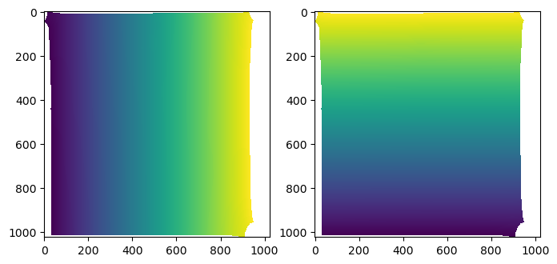
interpolate_per_vertex_field_to_UV
interpolate_per_vertex_field_to_UV (mesh, field, domain='per-vertex', uv_grid_steps=256, map_back=True, distance_threshold=0.0001, use_fallback=False)
*Interpolate a field defined per-vertex into the UV square.
The field can be defined per texture-vertex or per 3D-vertex. Make sure you use the right option!
Assumes the map x,y,z -> u,v to be invertible. This is not guaranteed - you can create overlapping UV coordinates in Blender. Raises RuntimeWarning if any of the triangles in the UV map are flipped, indicating self-intersections.
The provided UV coordinates will be mapped back to [0, 1]**2 if map_back is True. Else, coordinates outside [0,1] are ignored.*
| Type | Default | Details | |
|---|---|---|---|
| mesh | tcmesh.ObjMesh | Input mesh with UV coordinates. | |
| field | np.array of shape (mesh.texture_vertices.shape[0],…) | Input field. Can be an array with any number of axes (e.g. scalar or vector field). | |
| domain | str | per-vertex | Whether the field is defined per-vertex or per texture vertex. |
| uv_grid_steps | int | 256 | Size of UV grid. Determines resolution of result. |
| map_back | bool | True | Map back the UV coordinates to [0,1]**2. Else, coordinates outside [0,1] are ignored. |
| distance_threshold | float | 0.0001 | Points at a squared distance > distance_threshold in the UV square are considered “outside” the unwrapped mesh and are set to np.nan. |
| use_fallback | bool | False | Ignore mesh connectivity when interpolating. This is to be used as a fallback if you have a UV map with lots of flipped triangles (i.e. self-intersections). If ‘auto’, the fallback option is chosen automatically if there are any flipped triangles. |
| Returns | np.array of shape (uv_grid_steps, uv_grid_steps, …) | Field across [0,1]2 UV grid, with a uniform step size. UV positions that don’t correspond to any value are set to np.nan.** |
# try an example
mesh = tcmesh.ObjMesh.read_obj(f"{metadata_dict['filename']}_mesh_uv.obj")
field = mesh.vertices[:,:] # Let's consider the coordinates of the 3d vertex
mesh.texture_vertices[2355] -= .2 # Let's trip the warning by messing up the UV map
interpolated = interpolate_per_vertex_field_to_UV(mesh, field, "per-vertex")Warning: readOBJ() ignored non-comment line 4:
o basic_example_mesh_remeshed
/tmp/ipykernel_1939637/2667590714.py:49: RuntimeWarning: UV map has self-intersections, 3 flipped triangles. Try use_fallback=True?
warnings.warn("UV map has self-intersections, {} flipped triangles. Try use_fallback=True?".format(plt.imshow(interpolated[:,:,1])
plt.colorbar()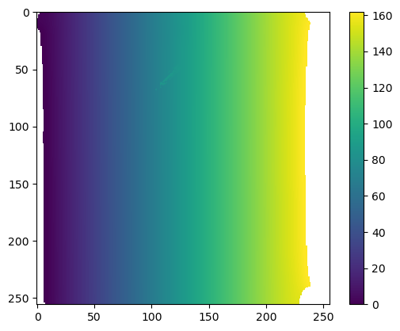
interpolate_UV_to_per_vertex_field
interpolate_UV_to_per_vertex_field (mesh, field, domain='per-vertex')
*Interpolate a field defined by gridded values across UV square onto mesh vertices.
This is useful for downstream geometric analysis. For example, you compute a vector field on a grid of the UV square and now want to get its values at the mesh vertices for geometric analysis.
There may be some np.nans at the mesh boundary!
The result can be defined per texture-vertex or per 3D-vertex. Make sure you use the right option!*
| Type | Default | Details | |
|---|---|---|---|
| mesh | tcmesh.ObjMesh | Input mesh with UV coordinates. | |
| field | np.array of shape (uv_grid_steps, uv_grid_steps,…) | Input field. Can be an array with any number of axes (e.g. scalar or vector field). Must be defined on a square grid with uniform step size of the UV square. |
|
| domain | str | per-vertex | Whether the result will be defined per-vertex or per texture vertex. If per-vertex, the values corresponding to all texture vertices that map to a vertex are averaged. |
| Returns | np.array of shape (n_vertices, …) | Field evaluated at mesh vertices. |
interpolate_volumetric_data_to_uv
interpolate_volumetric_data_to_uv (image, interpolated_3d_positions, resolution)
*Interpolate volumetric image data onto UV coordinate grid.
Uses 3d positions corresponding to each UV grid point as computed by interpolate_per_vertex_field_to_UV. 3d coordinates (in microns) are converted into image coordinates via the scaling factor.*
| Type | Details | |
|---|---|---|
| image | 4d np.array | Image, axis 0 is assumed to be the channel axis |
| interpolated_3d_positions | np.array of shape (uv_grid_steps, uv_grid_steps, 3) | 3d positions across [0,1]^2 UV grid, with uniform step size. UV positions that don’t correspond to any value are set to np.nan. |
| resolution | np.array of shape (3,) | Resolution in pixels/microns for each of the three spatial axes. |
| Returns | np.array of shape (n_channels, uv_grid_steps, uv_grid_steps) | 3d volumetric data interpolated onto UV grid. |
mesh = tcmesh.ObjMesh.read_obj(f"{metadata_dict['filename']}_mesh_uv.obj")
#mesh.texture_vertices[2355] -= .2 # trigger the fallback interpolation method by messing up UV mapWarning: readOBJ() ignored non-comment line 4:
o basic_example_mesh_remeshed# first interpolation step
uv_grid_steps = 256 # set UV grid size
uv_mask = ndimage.binary_erosion(get_uv_layout_mask_mask(mesh, uv_grid_steps=uv_grid_steps), iterations=3)
# this is our UV grid
u, v = 2*[np.linspace(0,1, uv_grid_steps),]
U, V = np.meshgrid(u, v)
interpolated_3d_positions = interpolate_per_vertex_field_to_UV(mesh, mesh.vertices, domain="per-vertex",
uv_grid_steps=uv_grid_steps, map_back=True)
interpolated_normals = interpolate_per_vertex_field_to_UV(mesh, mesh.normals, domain="per-vertex",
uv_grid_steps=uv_grid_steps, map_back=True)interpolated_3d_positions = interpolate_per_vertex_field_to_UV(mesh, mesh.vertices, domain="per-vertex",
uv_grid_steps=uv_grid_steps, map_back=True)
interpolated_normals = interpolate_per_vertex_field_to_UV(mesh, mesh.normals, domain="per-vertex",
uv_grid_steps=uv_grid_steps, map_back=True)CPU times: user 228 ms, sys: 4.21 ms, total: 233 ms
Wall time: 146 msnp.linalg.norm(mesh.normals, axis=-1).min()0.9694902988837123np.nanmin(np.linalg.norm(interpolated_normals, axis=-1))0.953786333836412# plot the interpolated positions
fig, (ax1, ax2) = plt.subplots(figsize=(8,4), ncols=2)
ax1.imshow(interpolated_3d_positions[...,1])
ax2.imshow(interpolated_3d_positions[...,2])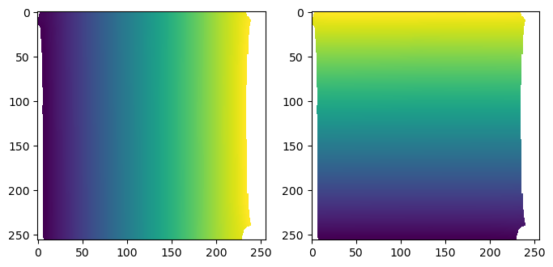
# plot the interpolated normals
fig, (ax1, ax2) = plt.subplots(figsize=(8,4), ncols=2)
ax1.imshow(interpolated_normals[...,1])
ax2.imshow(interpolated_normals[...,2])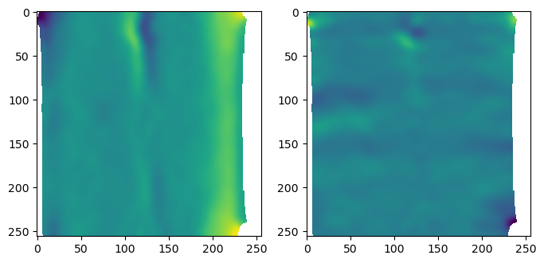
interpolate_volumetric_data_to_uv_multilayer
interpolate_volumetric_data_to_uv_multilayer (image, interpolated_3d_positions, interpolated_normals, normal_offsets, resolution)
*Multilayer-interpolate volumetric image data onto UV coordinate grid.
Uses 3d positions corresponding to each UV grid point as computed by interpolate_per_vertex_field_to_UV. 3d coordinates (in microns) are converted into image coordinates via the scaling factor.
Generates multiple “layers” by shifting surface along its normals.*
| Type | Details | |
|---|---|---|
| image | 4d np.array | Image, axis 0 is assumed to be the channel axis |
| interpolated_3d_positions | np.array of shape (uv_grid_steps, uv_grid_steps, 3) | 3d positions across [0,1]^2 UV grid, with uniform step size. UV positions that don’t correspond to any value are set to np.nan. |
| interpolated_normals | np.array of shape (uv_grid_steps, uv_grid_steps, 3) | 3d normals across [0,1]^2 UV grid, with uniform step size. UV positions that don’t correspond to any value are set to np.nan. Normal vectors will be automatically normalized. |
| normal_offsets | np.array of shape (n_layers,) | Offsets along normal direction, in same units as interpolated_3d_positions (i.e. microns). 0 corresponds to no shift. |
| resolution | np.array of shape (3,) | Resolution in pixels/microns for each of the three spatial axes. |
| Returns | np.array of shape (n_channels, n_layers, uv_grid_steps, uv_grid_steps) | 3d volumetric data multilayer-interpolated onto UV grid. |
# second interpolation step. here we have to include the conversion factor from microns back to pixels
interpolated_data = interpolate_volumetric_data_to_uv(image, interpolated_3d_positions,
metadata_dict['resolution_in_microns'])plt.imshow(interpolated_data[1])
plt.colorbar()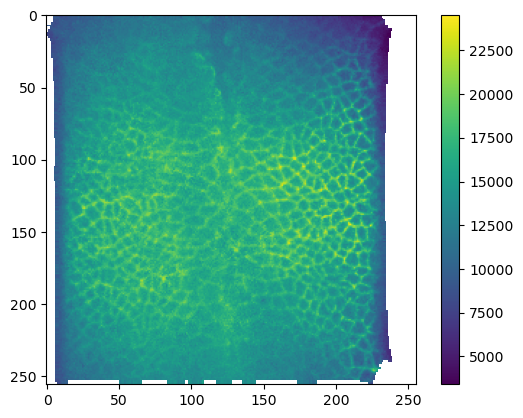
# now we can create a multilayer projection by shifting the surface according to the vertex normals
normal_offsets = np.linspace(-2, 2, 5) # offset in microns
interpolated_data_multilayer = interpolate_volumetric_data_to_uv_multilayer(image,
interpolated_3d_positions,
interpolated_normals,
normal_offsets,
metadata_dict['resolution_in_microns'])
print("Shape: axis 0 is channel, axis 1 is normal offset", interpolated_data_multilayer.shape)Shape: axis 0 is channel, axis 1 is normal offset (2, 5, 256, 256)plt.imshow(interpolated_data_multilayer[1, 0])
plt.colorbar()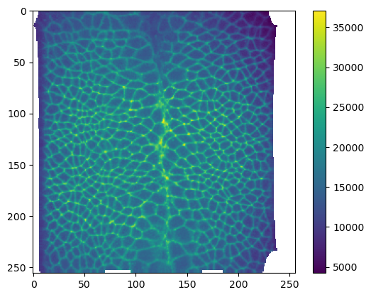
Cartographic projection
Let’s package the interpolation workflow up into a single function.
create_cartographic_projections
create_cartographic_projections (image, mesh, resolution, normal_offsets=(0,), uv_grid_steps=256, map_back=True, use_fallback='auto')
*Create multilayer cartographic projections of an image using mesh.
Computes multiple layers along the surface normal, with given normal offsets (in microns). 0 offset corresponds to no shift away from the mesh. Also computes 3d positions (in microns) and surface normals interpolated onto the UV grid.
UV positions that don’t correspond to any 3d position are set to np.nan.*
| Type | Default | Details | |
|---|---|---|---|
| image | str or 4d np.array | Image, either as a path to a file or as an array. If array, axis 0 is assumed to be the channel axis | |
| mesh | str or tcmesh.ObjMesh | Mesh, either as path to file, or as ObjMesh object. | |
| resolution | np.array of shape (3,) | Image resolution in pixels/micron for the three spatial axes | |
| normal_offsets | tuple | (0,) | Offsets along normal direction, in same units as interpolated_3d_positions (i.e. microns). 0 corresponds to no shift. |
| uv_grid_steps | int | 256 | Size of UV grid. Determines resolution of result. |
| map_back | bool | True | Map back the UV coordinates to [0,1]^2. Else, coordinates outside [0,1] are ignored. |
| use_fallback | str | auto | Ignore mesh connectivity when interpolating. This is to be used as a fallback if you have a UV map with lots of flipped triangles (i.e. self-intersections). If ‘auto’, the fallback option is chosen automatically if there are any flipped triangles. |
| Returns | np.array, np.array, np.array | interpolated_data : np.array of shape (n_channels, n_layers, uv_grid_steps, uv_grid_steps) 3d volumetric data multilayer-interpolated across [0,1]^2 UV grid, with uniform step size. interpolated_3d_positions : np.array of shape (uv_grid_steps, uv_grid_steps, 3) 3d positions across [0,1]^2 UV grid, with uniform step size. interpolated_normals : np.array of shape (uv_grid_steps, uv_grid_steps, 3) Normals across [0,1]^2 UV grid, with a uniform step size. |
normal_offsets = np.linspace(-2, 2, 5) # in micronsmesh = tcmesh.ObjMesh.read_obj(f"{metadata_dict['filename']}_mesh_uv.obj")
mesh.texture_vertices[2355] -= .2 # trigger the fallback interpolation method by messing up UV mapWarning: readOBJ() ignored non-comment line 4:
o basic_example_mesh_remeshedprojected_data, projected_coordinates, projected_normals = create_cartographic_projections(
image=f"{metadata_dict['filename']}.tif",
#mesh=f"{metadata_dict['filename']}_mesh_uv.obj",
mesh=mesh,
resolution=metadata_dict["resolution_in_microns"],
normal_offsets=normal_offsets,
uv_grid_steps=256,
use_fallback='auto')/tmp/ipykernel_1939637/2667590714.py:49: RuntimeWarning: UV map has self-intersections, 3 flipped triangles. Try use_fallback=True?
warnings.warn("UV map has self-intersections, {} flipped triangles. Try use_fallback=True?".format(
/tmp/ipykernel_1939637/2667590714.py:58: DeprecationWarning: Use of non-triangular meshes is discouraged
warnings.warn("Use of non-triangular meshes is discouraged", DeprecationWarning)# let's add the normal offset we want to our metadata - it will be important for analysis!
metadata_dict["normal_offsets"] = normal_offsetsplt.imshow(projected_data[1, 0])
plt.colorbar()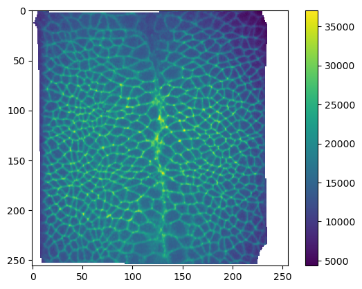
Saving and visualizing the results
We can now save the cartographic projections as .tif stack for quantitative analysis and as .png’s for visualization as mesh texture in Blender. We will also save the metadata to a .json file
Annoyingly, we have to normalize our data and convert it to 8-bit to save it as png.
# save metadata
tcio.save_dict_to_json(f"{metadata_dict['filename']}_metadata.json", metadata_dict)tcio.save_for_imageJ(f"{metadata_dict['filename']}_projected.tif", projected_data, z_axis=1)
tcio.save_for_imageJ(f"{metadata_dict['filename']}_3d_coordinates.tif", projected_coordinates)
tcio.save_for_imageJ(f"{metadata_dict['filename']}_normals.tif", projected_normals)texture_path = f"{os.getcwd()}/{metadata_dict['filename']}_textures"
tcio.save_stack_for_blender(projected_data, texture_path, normalization=(0.01, 0.99))# let's make a max projection of each channel and save them also
max_projected_ch_0, max_projected_ch_1 = projected_data.max(axis=1)
tcio.imsave(f'{texture_path}/max_channel_0.png', tcio.normalize_quantiles_for_png(max_projected_ch_0))
tcio.imsave(f'{texture_path}/max_channel_1.png', tcio.normalize_quantiles_for_png(max_projected_ch_1))Visualization in blender
You can set up textures in the “shading” tab:
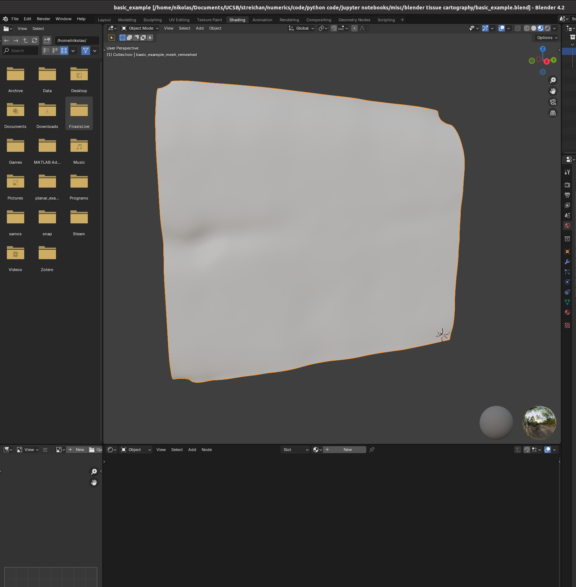
I find it helpful to remove the distracting “world” background, which you can do by either enabling “scene world” or setting “world opacity” to 0 in the viewport shading settings (arrow above “options” in the top right corner)
Go to the bottom panel, add a new material (center top of bottom panel), and press “shift+A” to add a new shader element (the search bar is very helpful). Here is an example configuration mixing two channels as red and green:
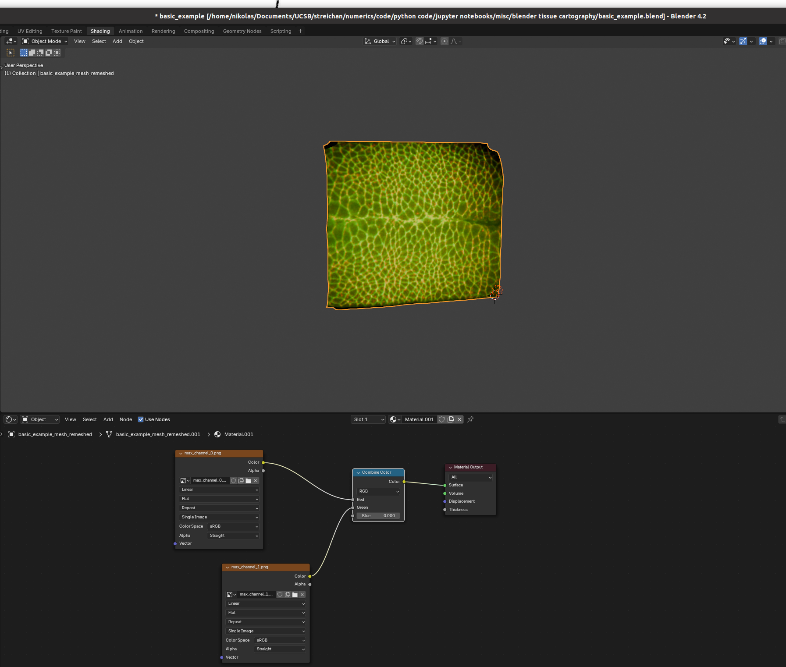
And there we go! Many further options exist to make more sophisticated renderings.